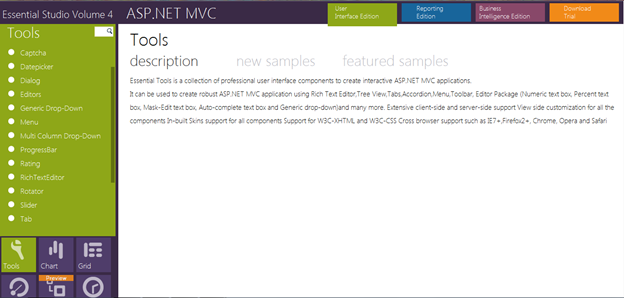

The Essential Tools Rotator control for MVC allows users to scroll through, and view items in a list, or gallery, with ease, and possibly to select one of them.
Use Case Scenarios
The user can-
· Concentrate on a few items at a time instead of going through a large collection one at a time
· Use this option when there isn’t enough space to display all the items required.
· Display highly visual objects such as pictures, photos, posters, etc. using this control.
Appearance and Structure
The following figure gives you a basic idea of the structure and appearance of the Rotator control in MVC Tools-

Figure 223: Rotator Control with ButtonMode enabled
Where do I find Installed samples?
To view the samples:
1. Click Dashboard. The Essential Studio Enterprise Edition window is displayed, and the User Interface Edition panel is displayed by default.
2. Click the Run Locally Installed Samples link. The Essential Studio MVC Edition sample browser is displayed.
3. Select Tools from the drop-down.

Figure 224: MVC Tools Sample Browser
4. Select any sample from the Rotator tab provided and browse through the features.
Source Code Location
The full source code of the Rotator Control will be available on the purchase of the product.
The default location of the Essential Tools MVC source code is:
[System Drive]:\Program Files\Syncfusion\Essential Studio\[Version Number]\MVC\Tools.MVC\Src
 Concepts and Features of the Rotator
control
Concepts and Features of the Rotator
control